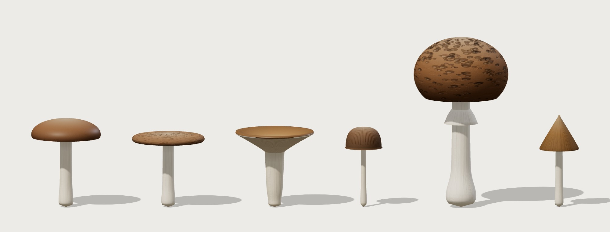

Taller de Informática II · Rodrigo Vidal
¿Se puede saber si un hongo es comestible mirándolo?

61.069hongos analizados
173especies de origen
55,5 %venenosos: la línea de base
1 · Las creencias populares
El anillo y la magulladura no sirven: son mitos
61 %venenosos con anillo
54 %venenosos sin anillo
53 %venenosos que se magullan
56 %venenosos que no
Las cuatro cifras quedan a pocos puntos del 55,5 % de toda la muestra. Mito
2 · El tamaño
Cuanto más chico el sombrero, más riesgo, pero nunca hay garantía
65–80 %venenosos con sombrero de hasta 4 cm
Desde unos 9 cm baja a 40–50 % y se mantiene. Ningún tamaño baja de 35 %.
Tendencia3 · Color y textura
Las señales fuertes están en los extremos, donde hay pocos hongos
92 %venenosos con superficie sedosa
43 %venenosos con tallo blanco, el más común
Señal en los extremos4 · Modelización en GeoGebra
p(x) = 0,740 − 0,109·ln(x): el riesgo baja, pero se aplana
62 %p(3): sombrero de 3 cm
45 %p(15): sombrero de 15 cm
Modelo 1 (FitLine): el tallo crece 1,83 mm/cm en venenosos y 1,79 en comestibles. Las proporciones no los distinguen.
5 · Combinar rasgos
Con todos los rasgos juntos, el 99,8 % queda en grupos “puros”
Pero los datos salen de 173 especies. Combinar muchos rasgos es, en el fondo, identificar la especie: lo que hace un micólogo.
En el mundo hay miles de especies, con parecidos peligrosos.
El giro6 · Más allá de la vista
Lo que se toca informa tanto como lo que se ve
38 %grupos puros con 4 rasgos táctiles
28 %con los 3 colores
- Modelos 3D impresos a escala, con la textura en relieve
- Gráficos que se escuchan (sonificación)
- Informes con texto y tablas para lector de pantalla
Conclusión
Con una regla simple, no. Con muchos rasgos, eso ya es identificar la especie.
- Los mitos (anillo, magulladura) no informan.
- Los rasgos útiles solo funcionan en los extremos.
- Las proporciones del hongo son iguales en los dos grupos.
Ningún hongo silvestre es seguro por su aspecto. Ante la duda, no se come.